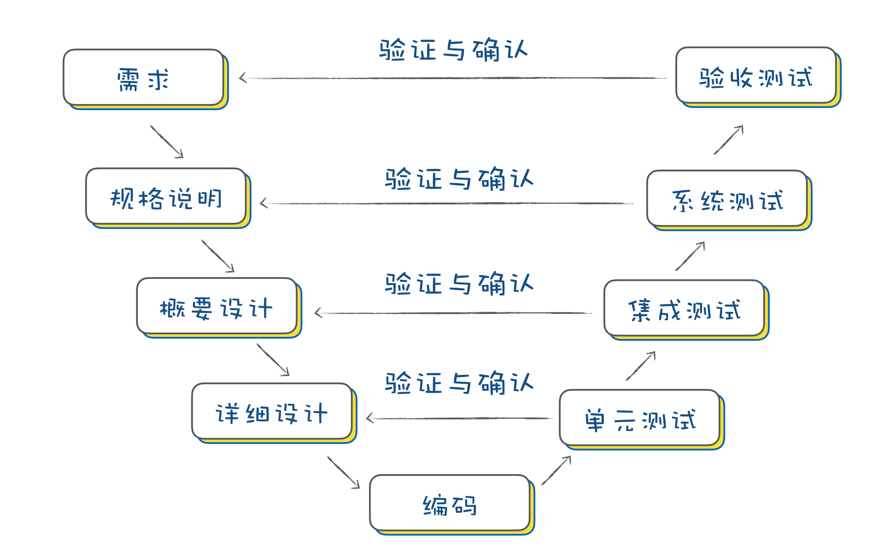
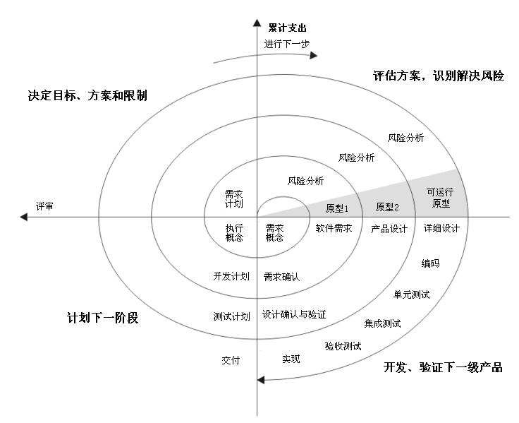

- 00 开篇词 你为什么应该学好软件工程？.md.html
- 01 到底应该怎样理解软件工程？.md.html
- 02 工程思维：把每件事都当作一个项目来推进.md.html
- 03 瀑布模型：像工厂流水线一样把软件开发分层化.md.html
- 04 瀑布模型之外，还有哪些开发模型？.md.html
- 05 敏捷开发到底是想解决什么问题？.md.html
- 06 大厂都在用哪些敏捷方法？（上）.md.html
- 07 大厂都在用哪些敏捷方法？（下）.md.html
- 08 怎样平衡软件质量与时间成本范围的关系？.md.html
- 09 为什么软件工程项目普遍不重视可行性分析？.md.html
- 10 如果你想技术转管理，先来试试管好一个项目.md.html
- 11 项目计划：代码未动，计划先行.md.html
- 12 流程和规范：红绿灯不是约束，而是用来提高效率.md.html
- 13 白天开会，加班写代码的节奏怎么破？.md.html
- 14 项目管理工具：一切管理问题，都应思考能否通过工具解决.md.html
- 15 风险管理：不能盲目乐观，凡事都应该有B计划.md.html
- 16 怎样才能写好项目文档？.md.html
- 17 需求分析到底要分析什么？怎么分析？.md.html
- 18 原型设计：如何用最小的代价完成产品特性？.md.html
- 19 作为程序员，你应该有产品意识.md.html
- 20 如何应对让人头疼的需求变更问题？.md.html
- 21 架构设计：普通程序员也能实现复杂系统？.md.html
- 22 如何为项目做好技术选型？.md.html
- 23 架构师：不想当架构师的程序员不是好程序员.md.html
- 24 技术债务：是继续修修补补凑合着用，还是推翻重来？.md.html
- 25 有哪些方法可以提高开发效率？.md.html
- 26 持续交付：如何做到随时发布新版本到生产环境？.md.html
- 27 软件工程师的核心竞争力是什么？（上）.md.html
- 28 软件工程师的核心竞争力是什么？（下）.md.html
- 29 自动化测试：如何把Bug杀死在摇篮里？.md.html
- 30 用好源代码管理工具，让你的协作更高效.md.html
- 31 软件测试要为产品质量负责吗？.md.html
- 32 软件测试：什么样的公司需要专职测试？.md.html
- 33 测试工具：为什么不应该通过QQ微信邮件报Bug？.md.html
- 34 账号密码泄露成灾，应该怎样预防？.md.html
- 35 版本发布：软件上线只是新的开始.md.html
- 36 DevOps工程师到底要做什么事情？.md.html
- 37 遇到线上故障，你和高手的差距在哪里？.md.html
- 38 日志管理：如何借助工具快速发现和定位产品问题 ？.md.html
- 39 项目总结：做好项目复盘，把经验变成能力.md.html
- 40 最佳实践：小团队如何应用软件工程？.md.html
- 41 为什么程序员的业余项目大多都死了？.md.html
- 42 反面案例：盘点那些失败的软件项目.md.html
- 43 以VS Code为例，看大型开源项目是如何应用软件工程的？.md.html
- 44 微软、谷歌、阿里巴巴等大厂是怎样应用软件工程的？.md.html
- 45 从软件工程的角度看微服务、云计算、人工智能这些新技术.md.html
- 一问一答第1期 30个软件开发常见问题解决策略.md.html
- 一问一答第2期 30个软件开发常见问题解决策略.md.html
- 一问一答第3期 18个软件开发常见问题解决策略.md.html
- 一问一答第4期 14个软件开发常见问题解决策略.md.html
- 一问一答第5期 22个软件开发常见问题解决策略.md.html
- 学习攻略 怎样学好软件工程？.md.html
- 特别放送 从软件工程的角度解读任正非的新年公开信.md.html
- 结束语 万事皆项目，软件工程无处不在.md.html
- 捐赠
04 瀑布模型之外，还有哪些开发模型？
你好，我是宝玉，我今天分享的主题是：瀑布模型的衍生模型都有哪些，你该如何选择？
在上一篇文章中，我重点介绍了瀑布模型。你现在知道了，瀑布模型简单易行，对于软件质量是有比较高保障的。但是瀑布模型对于前期需求不明确的项目，很难开展需求分析，后续如果有需求变更，瀑布模型便很难响应。
而且，每个软件项目的情况各不相同，都有自己的特点。比如说：
有的项目风险很高，客户可能随时不给你钱了，得要做好准备，随时止损；
有的项目客户自己没想清楚要想的是什么，做出来后再提各种修改意见，必须得想办法降低变更成本；
有的项目客户希望能很快就能上线。
如果选用瀑布模型做这些项目，就会导致成本过高或者周期过长等问题出现。所以，并不是所有的项目都适合使用瀑布开发模型，你需要针对不同的情况做一些调整。
实际上，为了应对瀑布模型的不足，已经衍生出了很多其他的开发模型。今天，我将为你分享一些有代表性的瀑布模型的衍生模型，你可以了解到这些衍生模型的本质，在接手不同类型的项目时，可以灵活地进行选择。
快速开发快速改
- 快速原型模型
我刚毕业时参加了一个项目的开发，项目经理跟我说，这个项目怎么快就怎么写，不要在意代码质量、架构、性能这些，当时我表示很不能理解，哪有这样做项目的？
我还偷摸着花了很多时间想把代码写好，结果发现，这个快速做好的简单版本，主要目的就是为了给客户演示，跟客户确认需求，然后把客户的反馈记录下来，再去优化。这样几个小版本下来，基本上就把需求确定了，而我当时写的好多代码根本就用不上。
后来我才知道，这就是快速原型模型。
快速原型模型，就是为了要解决客户的需求不明确和需求多变的问题。
先迅速建造一个可以运行的软件原型，然后收集用户反馈，再反复修改确认，使开发出的软件能真正反映用户需求，这种开发模型就叫快速原型模型，也叫原型模型。
这就好比客户想要盖房子，但是他没想好要盖成什么样子，于是施工方就先搭了一栋彩钢房（就像工地里面搭的临时房子），让客户先用起来，然后再给反馈调整。
因为彩钢房搭建简单快速，改起来也相对容易。等到客户确定好需求，再在已经搭好的彩钢房的基础上完善，或者直接重新按照确定好的需求造房子。
不过，这样做也有一个问题，用彩钢房这种方式盖房子虽然快，但是房子质量不会太好，住的不算舒服，想有点个性化的风格也难。
同样的道理，也适用于软件项目。彩钢房就像是软件原型，重点是反映软件核心功能和交互，功能可以是不完整的，可靠性和性能要求不高，但开发速度可以很快。
原型模型因为能快速修改，所以能快速对用户的反馈和变更作出响应，同时原型模型注重和客户的沟通，所以最终开发出来的软件能够真正反映用户的需求。
但这种快速原型开发往往是以牺牲质量为代价的。
在原型开发过程中，没有经过严谨的系统设计和规划，可靠性和性能都难以保障。所以在实际的软件项目中，针对原型模型的这种快速、低质量的特点，通常有两种处理策略：抛弃策略和附加策略。
抛弃策略是将原型只应用于需求分析阶段，在确认完需求后，原型会被抛弃，实际开发时，将重新开发所有功能。类似于用彩钢房盖房子，确认完客户需求后，拆掉重新建。
附加策略则是将原型应用于整个开发过程，原型一直在完善，不断增加新功能新需求，直到满足客户所有需求，最终将原型变成交付客户的软件。类似于用彩钢房盖房子，最后还要做一番精装修，交付客户。
采用哪种策略来应用原型模型，还是要看项目特点，包括所采用原型开发工具和技术的成熟度。举例来说，如果客户对可靠性、性能要求高，那么就最好是抛弃策略，如果客户对质量要求不高，有简单功能就够了，那么可以试试附加策略。
快速原型模型即使到现在还一直有在用，用于低成本快速的确认需求。如果你将来遇到这种项目，就没必要花太长时间在代码质量上，赶紧做出来才是王道。
另外，原型制作并不一定要像传统代码一样进行设计编码，有很多原型工具，像 Axure、墨刀等，简单的拖拽就可以实现简单的界面和交互，同样可以达到确认需求的目的。现在原型设计已经成为产品经理确认需求的一个非常重要手段。
大瀑布拆小瀑布
瀑布模型的很多问题，根源都是周期太长。周期长所以中间难以响应变更，周期长所以客户很久才能看到结果，周期太长所以风险不好控制。如果能将周期变短，那么很多问题就迎刃而解了。
基于这种思路，产生了很多开发模型，比较典型的主要是：增量模型 和 迭代模型。
- 增量模型——按模块分批次交付
增量模型是把待开发的软件系统模块化，然后在每个小模块的开发过程中，应用一个小瀑布模型，对这个模块进行需求分析、设计、编码和测试。相对瀑布模型而言，增量模型周期更短，不需要一次性把整个软件产品交付给客户，而是分批次交付。
如果拿盖房子来比喻的话，就是先盖卫生间，然后盖厨房，再是卧室。
盖卫生间的时候，也要先分析需求，然后设计，再实施，最后验收。有时候也可以多模块并行，例如同时盖卫生间和厨房，前提是模块之间不能有依赖关系，比如，你不可能先盖二楼再盖一楼。
你会发现，增量模型将整个系统进行模块化处理，所以你可以分批次交付软件产品，使用户及时了解软件项目进展。如果一个模块有问题，或者需要做需求变更，对整体影响也有限。在开发的时候，也可以灵活地按照模块来分工，多个模块并行开发提升效率。

因为增量模型的根基是模块化，所以，如果系统不能模块化，那么将很难采用增量模型的模式来开发。另外，对模块的划分很抽象，这本身对于系统架构的水平是要求很高的。
基于这样的特点，增量模型主要适用于：需求比较清楚，能模块化的软件系统，并且可以按模块分批次交付。
- 迭代模型——每次迭代都有一个可用的版本
迭代模型每次只设计和实现产品的一部分，然后逐步完成更多功能。每次设计和实现一个阶段叫做一个迭代。
我们还是继续拿盖房子来举例：如果用迭代模型的方式盖房子，第一个迭代要先盖一个茅草屋，快速满足客户对房子的核心需求；第二个迭代再盖一个小木屋，比茅草房更大更舒适；第三个迭代再盖成一个豪华别墅，满足客户所有需求。
你要注意，无论是造小木屋还是大别墅，整个过程都会像一个完整的项目一样，包括需求分析、设计、实现与测试验收。

在迭代模型中，整个项目被拆分成一系列小的迭代。通常一个迭代的时间都是固定的，不会太长，例如 2～4 周。每次迭代只实现一部分功能，做能在这个周期内完成的功能。
在一个迭代中都会包括需求分析、设计、实现和测试，类似于一个小瀑布模型。迭代结束时要完成一个可以运行的交付版本。

迭代模型和增量模型很容易混淆，因为都是把大瀑布拆成小瀑布。这两种模型的主要差别在于如何拆分项目功能上。
增量模型是按照功能模块来拆分；而迭代模型则是按照时间来拆分，看单位时间内能完成多少功能。
还是用盖房子来理解，增量模型则是先盖厨房，再是卧室，这样一个个模块来完成。而迭代模型则是先盖一个简单的茅草房，有简易的土灶和土床，然后再升级成小木屋，有更好的灶和更好的卧室，这样一步步迭代成最终的房子。
我原来参与过的瀑布模型开发的项目，因为要很长时间才能看到最终结果，而且结果通常跟最初描述的结果相差较多，客户看到后多少会有些心理落差。
而后来改用迭代模型后，因为每次迭代完成后都有可以运行的版本，这样客户可以直观感受软件的进展，及时调整心理预期。尤其是当客户见证了一个软件从简陋到完善的过程，往往满意度是比较高的。
迭代模型最难的部分，在于规划每次迭代的内容和要达到的目标。多了可能完不成，少了可能造成每次迭代工作量不饱和，这需要在实践中去摸索，一个迭代一个迭代的去调整。
迭代模型由于在初始迭代时，只清楚当前迭代的需求，而不知道后续需求，设计可能会考虑不周全。这样的话，迭代一多，系统会有不少冗余，一段时间后就需要对系统进行重构。
另外每次迭代，用户可能会增加新的需求和对现有需求进行更改，因此开发时间上可能会比预期要长。如果你做的是小项目的话，并不建议使用迭代模型来开发。
我该选择什么过程模型？
除了上面提到的这几种模型，还有很多其他开发模型，要记住所有的开发模型很难。你搞透了瀑布模型，搞清楚了其阶段划分，结合一些应用场景，你就可以举一反三，了解绝大部分衍生模型。
我在这里给你列举几个常见的项目场景，我们可以一起来分析下，看看用什么模型适合。
场景一：外包项目，需要阶段验收
假如你现在是一家外包公司，你可以采用瀑布模型开发，但是甲方需要对你项目的每个阶段进行验收测试，以确认你是不是达到要求。
针对从需求定义一直到编码阶段，每个阶段都有对应的测试验收。如果画成图，就是下面这个样子的。

这个模型就是 V 模型，本质上它还是瀑布模型，只不过它是更重视对每个阶段验收测试的过程模型。
场景二：项目风险高，随时可能会中断
如果你现在要做一个风险很高的项目，客户可能随时不给你钱了。这种情况下，如果采用传统瀑布模型，无疑风险很高，可能做完的时候才发现客户给不了钱，损失就很大了！
这种情况，基于增量模型或者迭代模型进行开发，就可以有效降低风险。你需要注意的是，在每次交付的时候，要同时做一个风险评估，如果风险过大就不继续后续开发了，及时止损。

这种强调风险，以风险驱动的方式完善项目的开发模型就是螺旋模型。
场景三：山寨一款软件产品，希望能快速上线发布
其实软件行业山寨的案例不少，山寨项目的特点是，项目需求是明确的，不会有什么变化，这时候就可以选择增量模型，划分好模块，先实现核心模块，发布可运行版本，再增量发布其他模块。多模块可以同步开发。
场景四：客户都没想清楚想要什么，但是个大单子
很多项目，客户一开始都没想清楚想要的是什么，需要花很长时间去分析定义需求，但是单子很大，值得认真去做好。
那么这样的项目，你可以考虑拆分成四个阶段：
- 初始阶段
主要是确定需求边界和主要风险，几乎没有什么开发工作。
- 细化阶段
这个阶段主要是确定需求，可以采用快速原型模型开发，和客户对需求反复确认，需要辅助一定量的开发和测试工作。对代码质量可以要求比较低，重点是确认需求。可能需要一个或多个版本迭代。
- 构造阶段
在需求确认清楚后，现在可以使用迭代模型来开发，逐步交付产品。这个阶段的重点是开发和测试。如果迭代中，有新的需求加入或者需求变更，也可以在新的迭代中加入。
- 交付阶段
在开发和测试完成后，产品可以交付客户，根据线上运行情况还需要修复一些 Bug。这个阶段重点是测试和部署。也会有多个迭代。
整个过程看起来就像下图这样。

上面这种开发方式来源自统一软件开发过程（Rational Unified Process，RUP），适用于复杂和需求不明确的软件系统。
场景五：我的产品已经上线，但是需要持续更新维护
很多产品在上线后，还在保持不停的更新维护，修复 Bug、增加新功能，每个月甚至每周更新。
在这种情况下，迭代模型是比较合适的。固定时间周期，在固定的周期内选择适合的需求开发任务和 Bug 修复任务去完成，按时发布。
另外还可以尝试敏捷开发，也是基于迭代的开发模型，它也强调快速交付，每次交付系统的部分功能，来保证客户满意度。在敏捷开发中，系统交付的周期称之为冲刺（Sprint）。
严格来说，敏捷开发并不算是一种开发模型，更像是框架或指南。有各种开发模型来实现敏捷开发，比如说极限编程（Extreme programming），看板（Kanban）和 Scrum。有关敏捷开发，我将在下一篇中向你详细讲解。
总结
现在的软件项目，各种类型都有，根据项目特点，选择好合适的开发模型，可以让你事半功倍，降低项目风险，提高项目开发效率，控制项目成本。比如说：
一个以确认需求为主要目的的项目，就可以不用花太多时间在代码质量上面，低成本、高效做出来才是最重要的；
一个高风险的项目，则可以采用螺旋模型，出现问题及时止损；
一个很长时间加班加点，却一直没法上线，导致士气低落的项目，可以改成增量模型，先上线一个小模块，让大家看到成绩提升士气，然后再迭代，逐步上线其他模块。
同时，你也不必拘泥于这几种开发模型，还可以借鉴其他模型做的好的地方，甚至创造自己的开发模型，比如说你觉得敏捷的“站立会议”适合你的项目，那也可以借鉴过来。
© 2019 - 2023 Liangliang Lee. Powered by gin and hexo-theme-book.